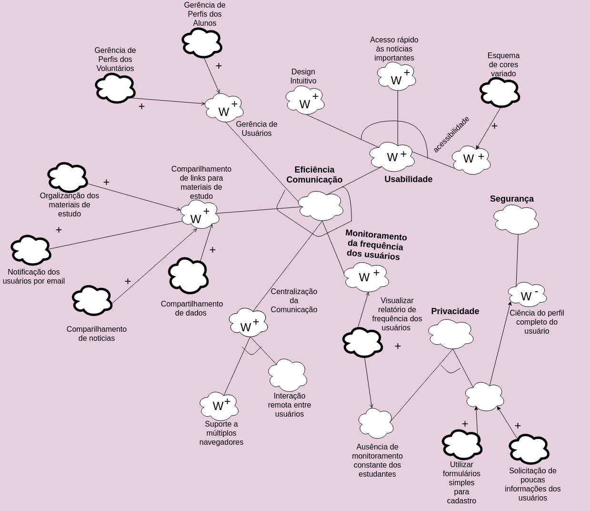

NFR Framework - Modelagem de Requisitos Não Funcionais
Histórico de Revisões
| Data | Versão | Descrição | Autor(es) |
|---|---|---|---|
| 31/03/2018 | 1.0 | Modelagem do NFR - versão inicial | Bernardo e Letícia |
| 01/04/2018 | 1.1 | Ajustes no modelo e adição da descrição e referências | Letícia |
O NFR Framework visa priorizar os requisitos não funcionais como usabilidade, segurança e privacidade para gerar o processo de design em geral, enquanto a maioria das abordagens convencionais para o design do sistema são orientadas por requisitos funcionais, o NFR framework procura colocar os requisitos não funcionais em primeiro lugar na mente do desenvolvedor.
Modelo NFR - Versão inicial

Referências
- Chung L., Nixon B.A., Yu E., Mylopoulos J. (2000) The NFR Framework in Action. In: Non-Functional Requirements in Software Engineering. International Series in Software Engineering, vol 5. Springer, Boston, MA